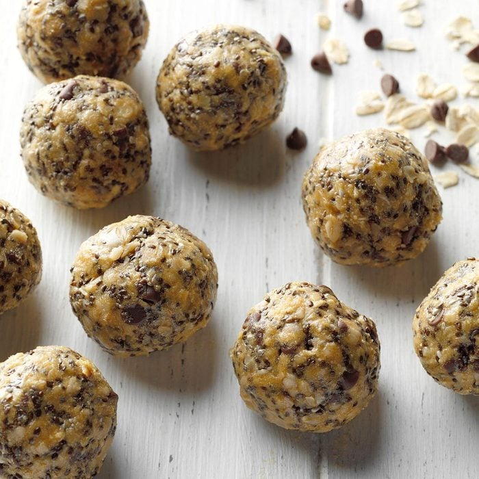

Protein Balls

Description
This six-ingredient protein balls recipe creates treats that are perfectly poppable and sweet as can be.
Ingredients
- 1 and 1/2 cups quick cooking oats
- 1/2 cup chia seeds
- 1/2 cup honey or maple syrup
- 1/2 cup creamy peanut butter
- 1/4 cup vanilla or chocolate protein powder
- 1/4 cup miniature semisweet chocolate chips
Steps
- In a large bowl, combine all ingredients.
- Refrigerate 1 hour or until firm enough to roll.
- Shape into 1 and 1/2 inch balls. Store in the refrigerator.